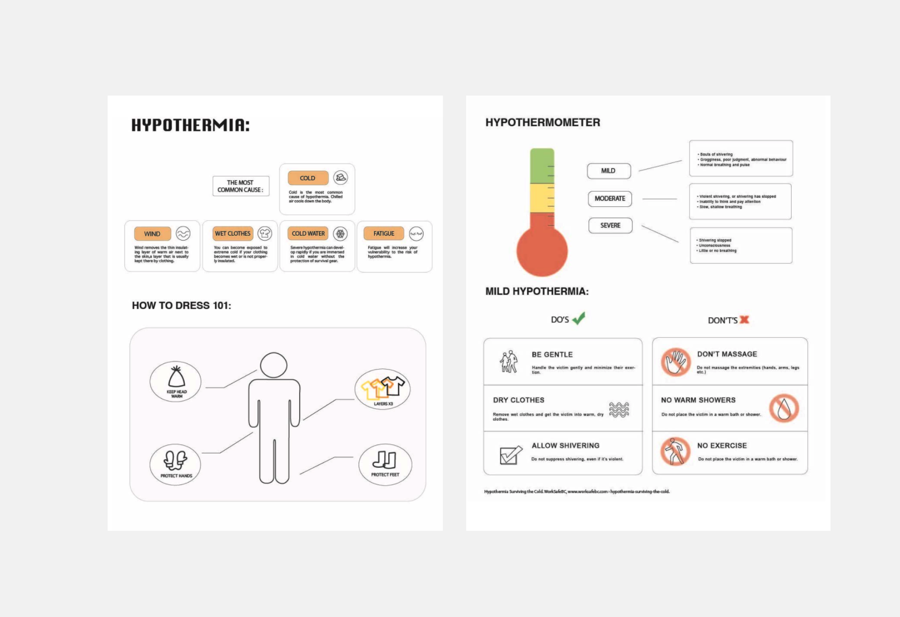
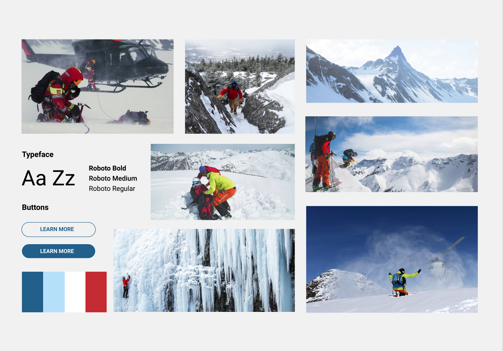
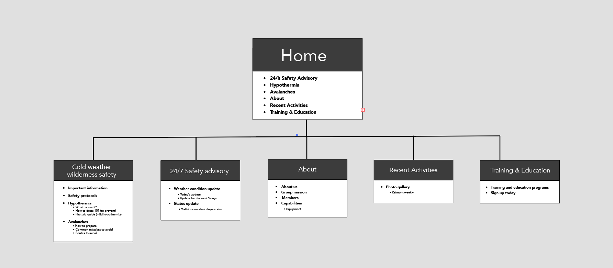
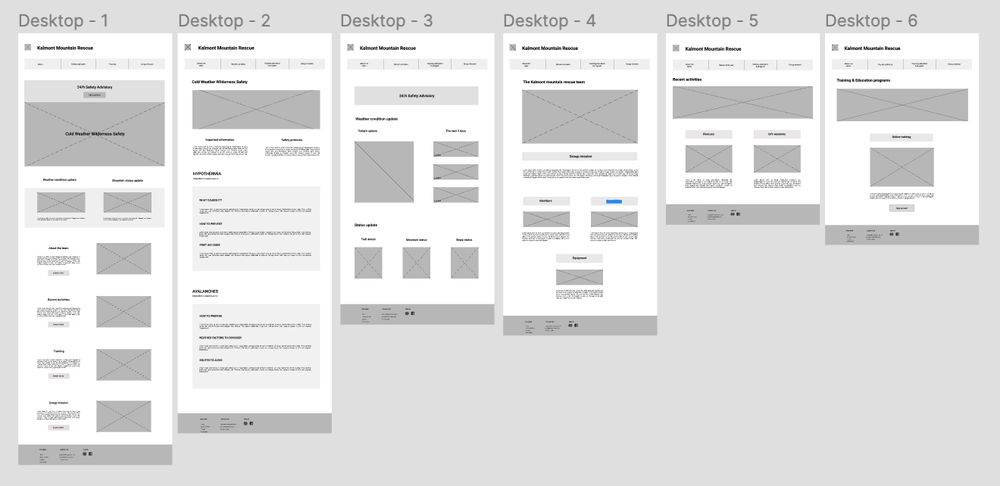
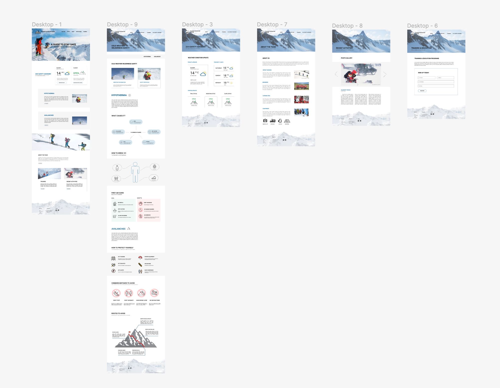
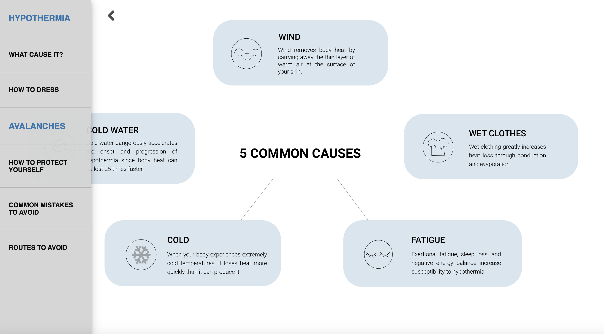
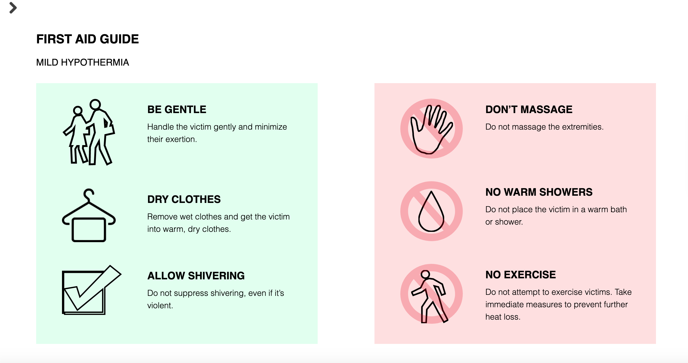
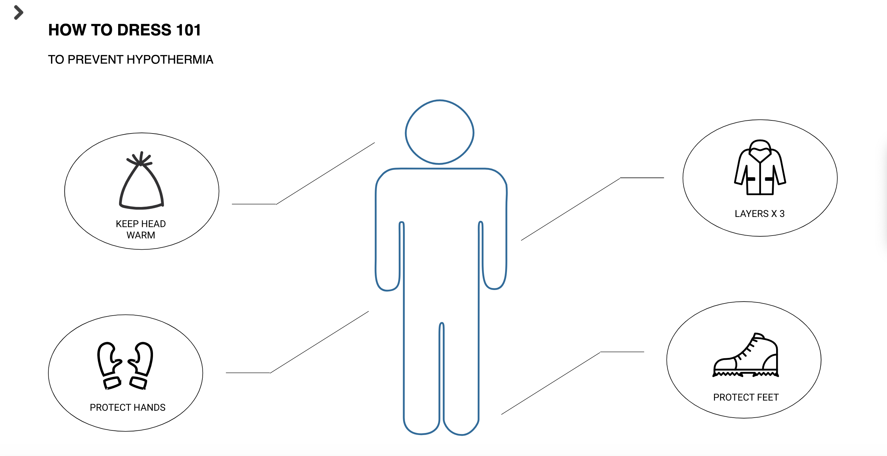

Wendy Zhang, Orion Situ My role: project lead, low-mid- high fidelity mock-up, wireframing, prototyping, information architecture
Overview
For the final project in my IAT 235 class, I was given the task to build a mountain rescue website for a fictional town named Kalmont. The main design goal of this project was helping users to acquire important safety information about hypothermia and avalanches and guide them through essential safety protocols through this mountain rescue website.
Target audience
The target user includes tourists visiting ski resorts, seeking for a recommended guideline to prevent hypothermia and to prepare themselves to stay warm in colder and mountainous climates.
Process
1. Infographics
My approach to solving the problem was spending a lot of time in the initial discovery phase- doing research and prototyping different ways to visually represent important information on hypothermia and avalanches through infographics using Adobe Illustrator. This step was crucial for me to understand the information I’m trying to communicate to the users inside out in order to find feasible solutions.

Infographic prototypes made on Adobe Illustrator by me
I focused my research on hypothermia and avalanches, posing and answering the following questions; “what causes it”,“how to prevent it" and "how to deal with it”.
2. Moodboard
I started off my design process by creating a moodboard in order to visualize my website a little better. I chose a blue color palette to reflect the cold weather wilderness, using steel blue as the main accent color.

Moodboard
3. Sitemap
Creating a sitemap was essential to establish information architecture and sort exactly which content goes in which page. After organizing the information, it was easier to create wireframes and mainly focus on exploring different layout options.

Sitemap created by me on Adobe illustrator
4. Wireframes
My teammates and I each created our own set of wireframes and high-fidelity mockups on Figma. After discussing the most viable option together and discussing with the TA, we decided to move forward with my design prototypes.

Wireframes created by me on Figma
5. High-fidelity mockup
I explored different layouts by prototyping low/high-fidelity mockups on Figma and went through 3-4 iterations to establish a unique style for the website. One of the feedbacks I got from my TA in one of the crit sessions is the fact that my prototype looked too simple. In the following iteration, I tried to add more dynamic to the overall website.

High-fidelity mockup
Problem space
In the safety page, we decided to combine safety information on hypothermia and avalanches instead of having two separate pages for each topic to avoid overloading the nav bar.
Solutions
To fix the problem that arises from having a long list of content which may be tedious for some users to scroll through on the information page, we decided to create a separate side nav bar. This gives users the option to scroll through the entire page or simply navigate using the side nav bar.

secondary navigation bar
Visual cues
Another solution my team tried to amplify implementing as little text as possible in this page yet, focused on establishing a clear pattern- icons accompanied by bolded sub headers so that the users can easily identify the important information with the option to read additional text.

First aid guide

How to dress 101
Future explorations
If I were to do this a second time, I would re-design the landing page. I must admit I spent the majority of my time building the information page and learning HTML/CSS for the first time that I didn’t get to brainstorm many layout options for the home page. I would also work on the responsiveness of the website so it looks at any size.
Reflection
It was challenging to meet the tight deadlines for each weekly deliverables and go to office hours every week to get additional feedback from my TA. However the most challenging part about solving this problem was trying to deliver a set of important information in a simplified yet efficient way. I believe that every design choice has a trade-off - if we make things too simple I was worried users would miss out on essential information pertaining to cold weather wilderness safety. It was challenging to find the middle ground at first, but investing a lot of time in the initial stages to truly know the information I am communicating inside out helped immensely. This is a very important lesson I learned while solving this problem as a designer.